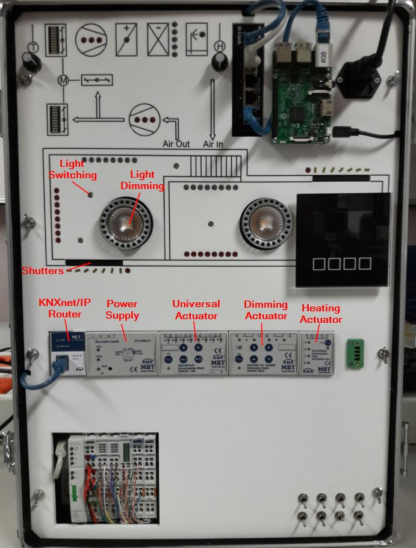

Objective
This example contains the most important functions, like
- Switching (On/Off)
- Blinds (Up/Down)
- Dimming (relative)
Description
This demo is based on the smart home kit hardware. The purpose of this Smart Home Kit is to simulate a Smart Home with different devices and technologies. There are two rooms in the demo case. Heating, cooling, lighting and shading are controlled by KNX components. The air ventilation system on the top is controlled by a Wago PLC. On the right upper side a Raspberry Pi 3 is mounted.
Requirements
For this demo you need
- AsTeRICS 3.0 installed and ARE running
- OS: Windows, Linux (incl. RPi), Mac OSX
- A little knowledge on KNX
- A KNX system and a list of the group addresses
KNX Demo
To run this demonstration, the IP address of the KNX/IP Router and the group addresses have to be adapted.Configure IP settings
The following IP addresses have to be adapted in the properties of the KNX plugin:
- localIP: The IP address of the machine AsTeRICS is running
- KNXNetIP: The IP address of the KNX IP gateway

Adapt group addresses
As next step, the group addresses have to be adapted. In this demo, four different commands are implemented:- Switching a light: A light can by switched on and off with two buttons. In this demo case the group address is 1/0/0.
- Move blinds: The blinds are controlled with two buttons. The group address is 2/0/0.
- Dimming a light with buttons: The light is controlled with two buttons. The group address is 1/0/6.

Configure for your system
IP settings:
Group addresses:
More information
Input Port Description
- actionString [string]: This port receives string commands for the KNX component. The commands have to be in the format "@KNX: group_address,datapoint_type,value". The delimiters ',', '#' and ' ' are allowed. An example for a valid command is"@KNX:1/1/1,1.001,on". As a valid command is received by the input port, the value is sent to the KNX group address. The group addresses comply to the setup of the KNX network which can be configured with the ETS software.
- slider[1-6] [double]: Input port for a double value which is converted to a given datapoint (Property: DPTSlider[1-6]) and sent to the given KNX group address (Property: groupAddressSlider[1-6]
Output Port Description
- data [1-6] [string]: These output ports are sending received data from the group addresses (Property: groupAddressOutput[1-6]). The data interpretation is controlled by the DPT (datapoint type, property: DPTOutput[1-6])
Properties
- localIP [string]: The local IP address of the interface which can reach the KNXnetIP.
- KNXNetIP [string]: The destination IP address of the KNX gateway.
- NAT [boolean]: Enable NAT
- groupAddress[1-6] [string]: (Event Listener) Specifies KNX group addresses for the [n] Event Listener e.g. "1/1/1".
- dataValue[1-6] [string]: (Event Listener) Date value, which should be sent (triggered by the input event). The possible values are determined by the used DPT property (see the chapter on datapoint types)
- DPTEvent[1-6] [string/dropdown]: (Event Listener) Specifies the DPT (datapoint type) of the dataValue[1-6] which is sent to the KNX group address, triggered by the input event.
- groupAddressSlider[1-6] [string]: (Input port) Specifies KNX group addresses for the Slider[n].
- DPTSlider[1-6] [string/dropdown]: (Input port) Determines the datapoint type corresponding to the sliders [1-6].
- groupAddressTrigger[1-6] [string]: (Event Trigger) Specifies KNX group addresses for the Event Trigger [n]. The event is triggered if ANY action is happening on the given group address. If you need additional data processing, please use the output ports and process the received data values.
- groupAddressOutput[1-6] [string]: (Output port) Specifies the KNX group addresses, which are sent to the output ports. If there is anything happening on the given group adresses, the corresponding data is sent to the output ports.
- DPTOutput[1-6] [string/dropdown]: (Output port) Determines the datapoint type for the output port. The received data interpretation is defined by the DPTOutput property.
Event Listener
- send[1-6]: Each time an event is triggered, the corresponding KNX command which is specified in the plugin properties (groupAddress[1-6],dataValue[1-6],DPTEvent[1-6]), is issued.
- read[1-6]: Trigger a read command on the output port. The settings for the group address and the DPT are the same as for the output ports (groupAddressOutput[1-6], DPTOutput[1-6]).
Event Trigger
- event_out_[1-6]: When there is any activity on the given KNX group address, set by the properties (groupAddressTrigger[1-6]) an event is raised by this plugin.
Additional Material
Major Plugins
Edit Model
Open in WebACSSource Repository
Fork and modify this repository.